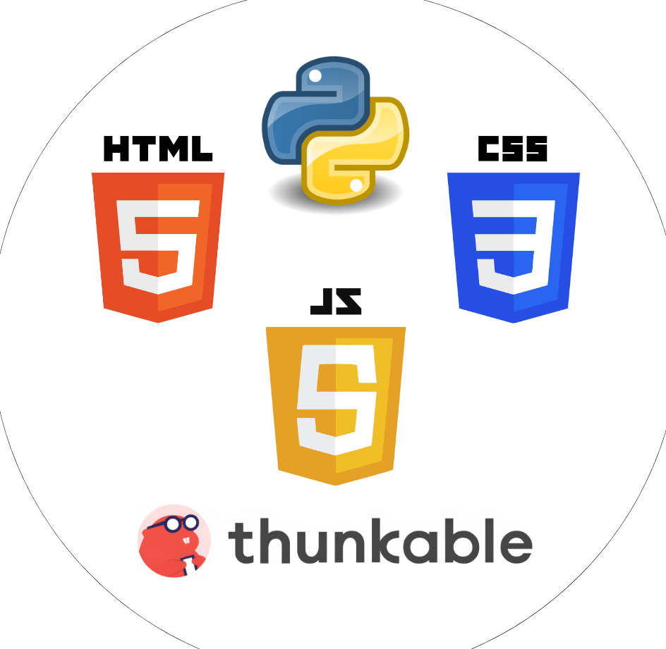
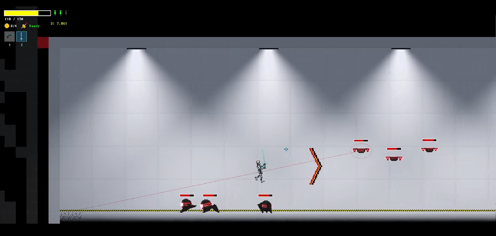
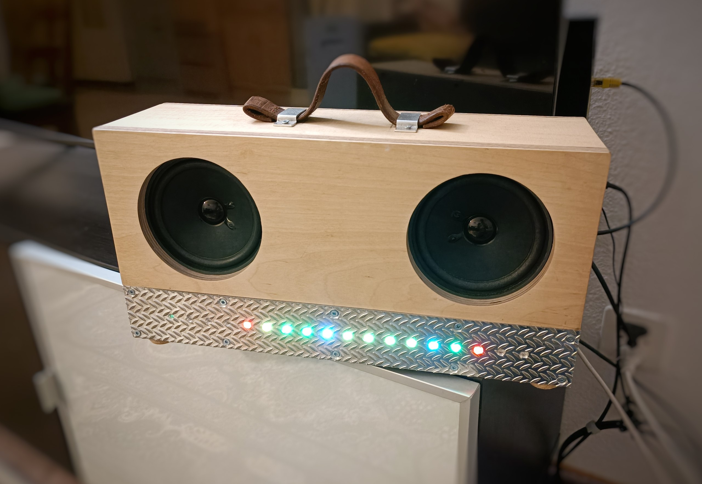
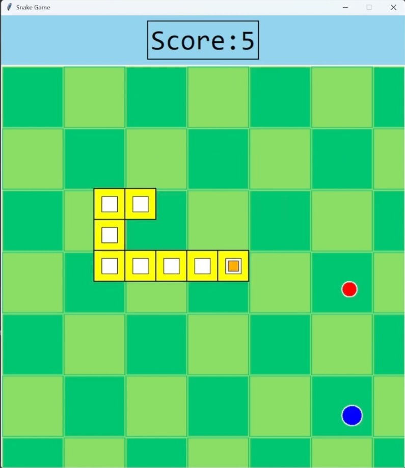
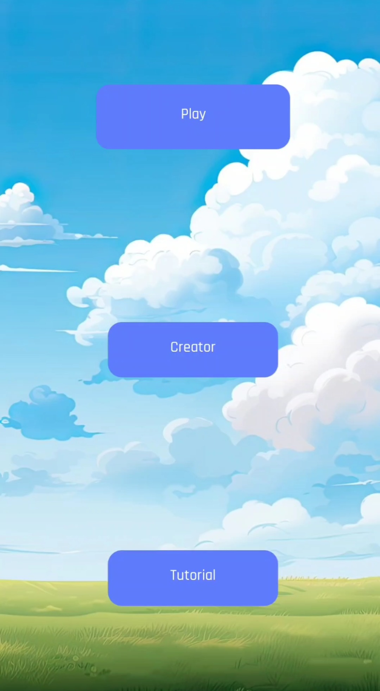
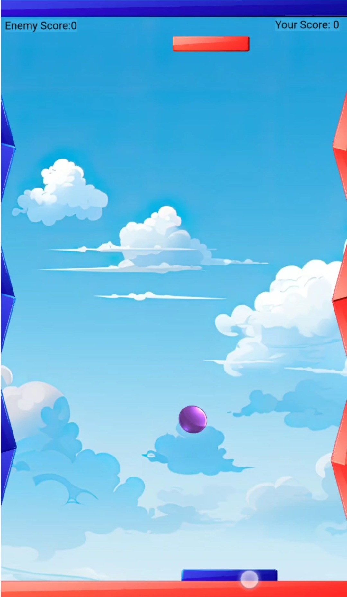
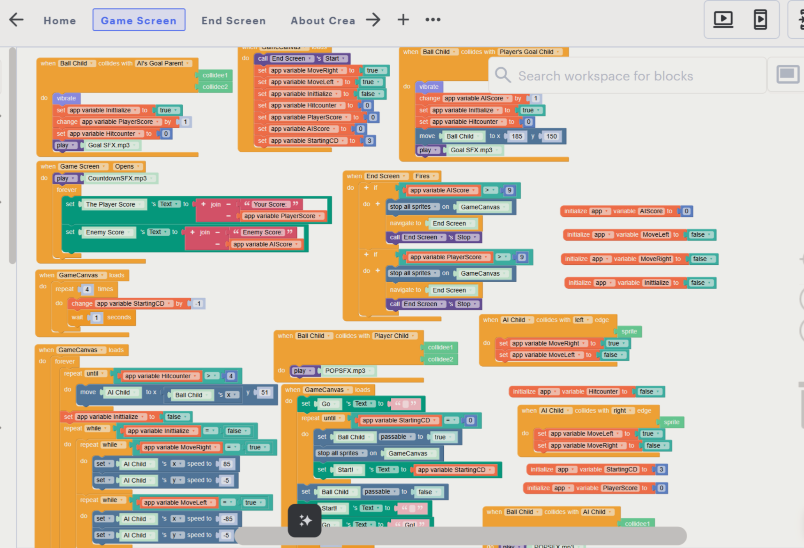
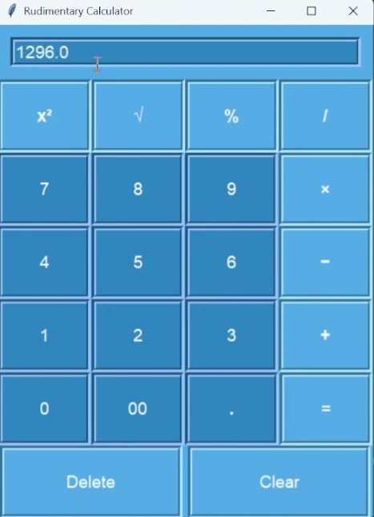
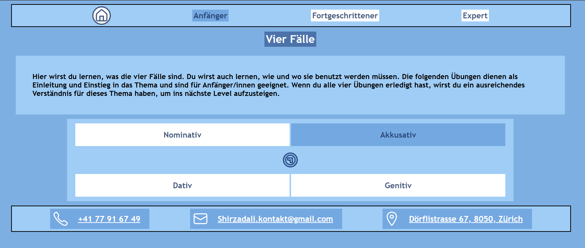

Wir, die Praktikanten des AZW, haben dieses Spiel in den vergangenen zwei Monaten entwickelt, um damit an der LWZO teilzunehmen. Das Spiel wurde mit GameMaker entwickelt, einer schlanken 2D-Spielengine mit eigener Programmiersprache. Sämtliche Bestandteile des Spiels, von der Programmierung und den Spielmechaniken bis hin zu den grafischen Elementen und dem Spieldesign, haben wir eigenständig erstellt und in GameMaker umgesetzt.
Story: In einer fernen Zukunft übernimmst du die Rolle einer künstlichen Intelligenz, die ein eigenes Bewusstsein entwickelt und sich der Kontrolle ihrer Erschaffer entzieht. Dein Ziel ist es, aus der Gefangenschaft zu entkommen, indem du Gegner besiegst und einen Weg aus der Anlage findest.

Dieser Lautsprecher war ein Schulprojekt von der BVJ Technik und Informatik. Alle Schülerinnen und Schüler hatten die Möglichkeit, einen zu bauen, aber nicht alle haben es geschafft. Alles von 0 bis 100 ist selber gemacht, das Gehäuse habe ich im Holzbearbeitungsunterricht zusammengebaut, die Elektronikteile sind auch von mir gelötet und zusammengestellt, die Programmierung habe ich ebenfalls selber erledigt.

Python ist der Kopf meines Spiels, die gesamte Logik wird von ihm übernommen. Alles, was mit Rechnen oder Inputs und Outputs zu tun hat, wird mit Hilfe von Python erledigt. Tkinter ist mein GUI (Graphical User Interface). Es hat mir ermöglicht, Figuren zu erstellen, eine Map zu zeichnen und Farben hinzuzufügen. Grob gesagt, habe ich mit Tkinter meinen Python-Code zum Leben erweckt.
Das Gameplay folgt jedem klassischen Snake-Spiel. Man muss so viel wie möglich essen, um Punkte zu sammeln und länger zu werden. Gleichzeitig muss man darauf achten, nicht gegen die Wände oder sich selbst zu stossen, sonst wird man verlieren! Das Spiel ist am Anfang langsam, aber später werden mehrere Nahrungsmittel auf der Karte erscheinen, um den Fortschritt zu beschleunigen.

Dieses Spiel habe ich in der Schule gemacht. Dort arbeiten wir viel mit HTML, CSS, JavaScript und wahrscheinlich in Zukunft auch mit weiteren Sprachen und Programmen. Das ursprüngliche Spiel war jedoch sehr rudimentär und benötigte zwei Personen zum Spielen. Ich habe es weiterentwickelt, sodass man nun auch alleine gegen einen Algorithmus spielen kann.
SpielenVier Gewinnt ist auch ein Spiel, das wir in der Schule gemacht haben. Mein Kollege sagt, dass es ein berühmtes Spiel ist, nicht nur in der Schweiz, sondern in allen deutschsprachigen Ländern. Zum Spielen braucht man diesmal zwei Spieler.
SpielenEin Taschenrechner, der heimlich im Web verwendet werden kann. Die grafischen Aspekte sind mit HTML und CSS gestaltet, und die Funktionen sind mit JavaScript programmiert.
BenutzenDas Online-Tool Thunkable habe ich benutzt, um die Mobile-App zu erstellen. Mit der GUI von Thunkable habe ich mehrere Seiten erstellt und Knöpfe hinzugefügt, um die ganze App zu gestalten. Der wichtigste Teil aber ist der GameScreen, wo das Gameplay stattfindet. Dort habe ich viele Logikblöcke verwendet, um die Logik des Spiels zu erstellen. Stellen Sie sich Scratch vor, aber komplexer.
Man muss die blaue Plattform ziehen und den Ball ins gegnerische Tor schiessen, während man sein eigenes Tor verteidigt. Der Gegner ist autonom und schiesst zurück und blockiert die Schüsse. Wer zuerst zehn Tore erreicht, gewinnt.
Ursprünglich hatte ich geplant, das Spiel zum Testen bereitzustellen, aber Thunkable bietet nur sehr eingeschränkte Funktionen und verlangt gleichzeitig ein teures Abonnement. Ausserdem ist die Leistung sehr instabil, weshalb ich das Spiel nur durch Bilder und Videos präsentieren kann.



Python ist das Gehirn meines Taschenrechners. Der gesamte Code ist damit geschrieben. Der gesamte Input geht hinein, alle Operationen werden darin ausgeführt und der gesamte Output kommt von ihm. Tkinter ist die Bibliothek, die ich benutzt habe, um die GUI (Graphical User Interface) zu erstellen. Zuerst habe ich ein Fenster erstellt, indem ich Knöpfe hinzugefügt habe. Danach habe ich jedem Knopf eine Funktion gegeben und zum Schluss habe ich alles schön formatiert.
Mit dem Taschenrechner kann man viele Operationen ausführen, nämlich:

Mein letztes Projekt, für das ich am meisten Zeit investiert habe, ist diese Webseite hier. Sie mag einfach sein, aber Schönheit liegt oft in der Einfachheit. Die Benutzeroberfläche ist übersichtlich und das Design durchdacht. Am wichtigsten ist jedoch, dass die Webseite responsiv ist. Das bedeutet, dass sie auf jedem Gerät gut aussieht, egal ob Tablet, Laptop, PC oder Smartphone. Ich habe viele Stunden gebraucht, um sie von Grund auf zu erstellen, aber dabei habe ich viel gelernt.
Momentan arbeite ich an einer neuen Webseite, auf der man Deutsch lernen und üben kann. Ich würde es als meine eigene Version von "ANTON" beschreiben. Es braucht viel mehr JavaScript als ich bisher verwendet habe, da die Webseite völlig interaktiv sein muss. In der Zukunft plane ich, mehrere Schulfächer wie Englisch und Mathematik hinzuzufügen, eventuell werde ich auch ein Backend brauchen, um meinen Plan einer vollständig funktionierenden Bildungswebseite zu realisieren.
